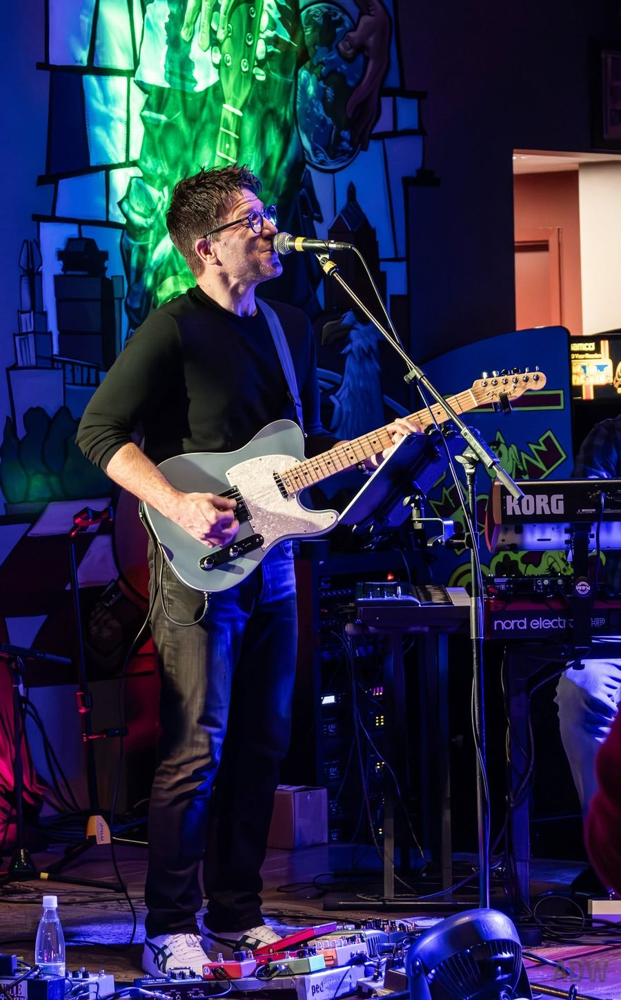
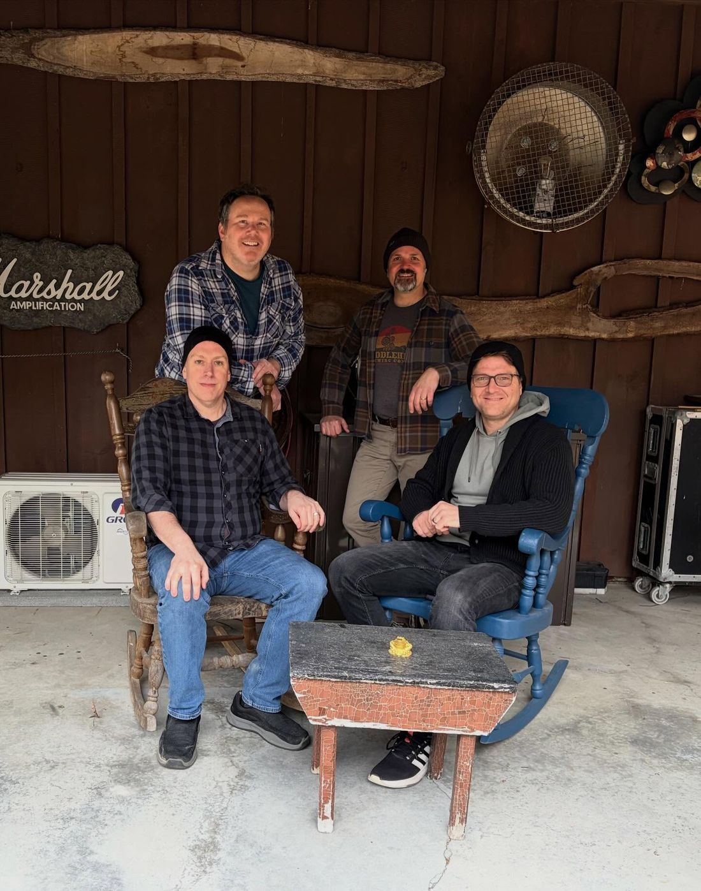
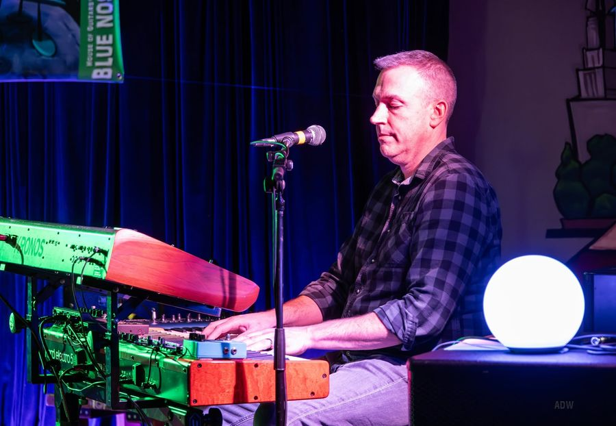
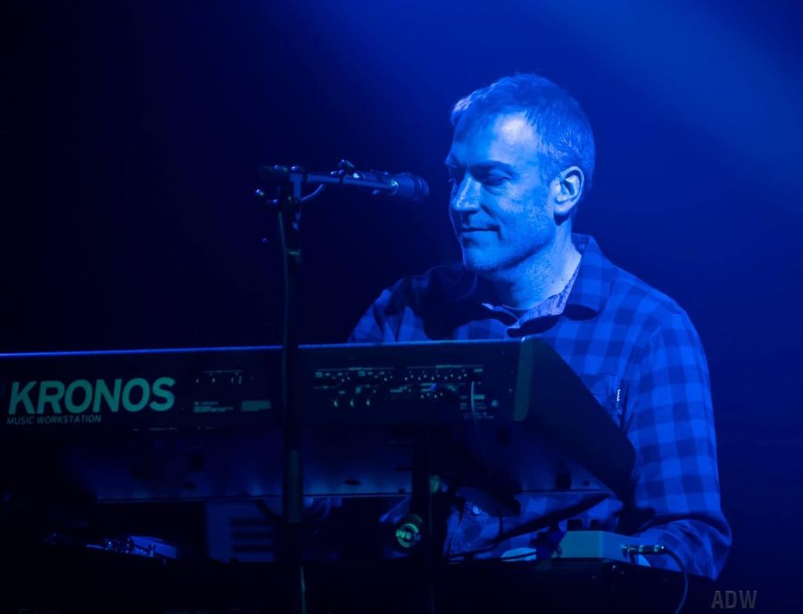
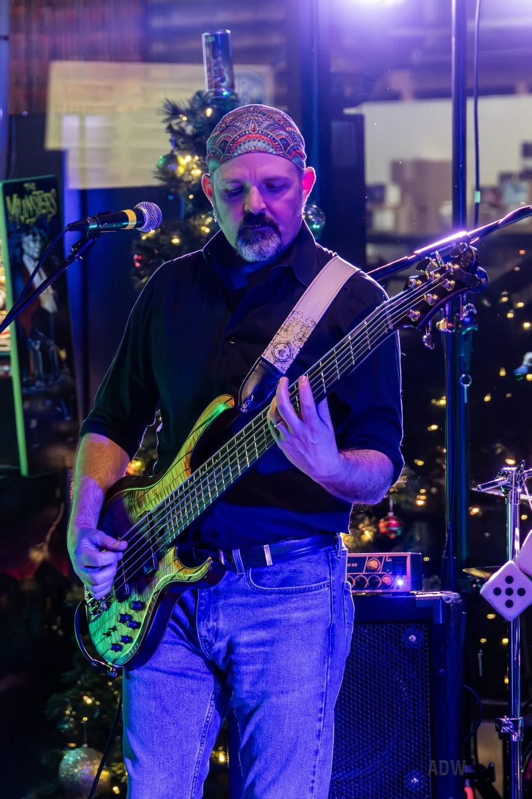
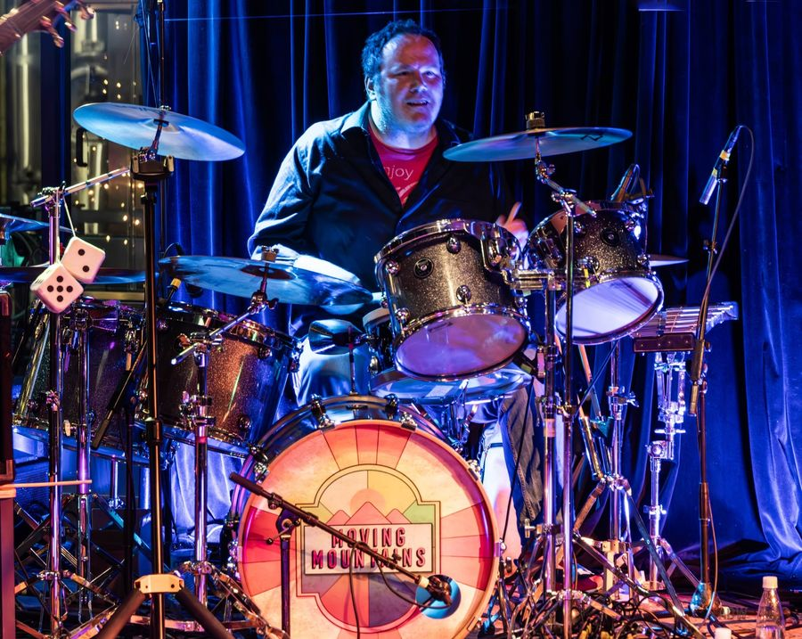

Miles McHugh
Guitar & Vocals
Rochester, New York
Progressive Rock • Jam • Jazz • Blues • Pop
A Decade of Moving Mountains
Celebrating 10 years of making music together in 2026, Moving Mountains has earned an enthusiastic following throughout the Rochester, New York music scene with a distinctive sound that defies easy categorization. Blending elements of rock, progressive rock, pop, jam, jazz, and blues, the four-piece band delivers an adventurous musical experience, defined by exceptional musicianship, inventive songwriting, and unmistakable chemistry.
Moving Mountains brings together beautiful vocal harmonies, inventive melodies, soaring guitar solos, and intricate rhythmic grooves to create music that is both sophisticated and deeply engaging. Their sound moves effortlessly between intricate arrangements and soulful, expressive passages, combining the technical precision of progressive rock with the spontaneity and energy of a seasoned live band.
The band’s album, This Quiet World, showcases this musical versatility and has earned praise from Rochester-area music critics and fellow musicians. Writing about the album, music journalist Frank De Blase highlighted the band’s ability to bring together contrasting musical dynamics, describing the recording as a collection of eight tracks that balance the quiet and the powerful.
A decade into their musical journey, Moving Mountains continues to distinguish itself through the strength of its musicianship, its genre-spanning sound, and its connection with an enthusiastic and devoted audience.

Four Players, One Sound

Guitar & Vocals


Keyboards & Vocals

Bass Guitar & Vocals

Drums & Percussion
This Quiet World
Eight tracks that balance the quiet and the powerful — the band’s album, released November 2021.
What They’re Saying
It’s hard to be a quiet band in this quiet world.
Of all the different types of local bands that we have in the area, you should make a point to see Moving Mountains. They should be at the top of your list.
Sonically innovative, new and refreshing.
Colombo also praised the band’s musicianship, technical complexity, soul, and originality.
Bring Moving Mountains to Your Stage
Clubs, festivals, breweries, private events and press — we’d love to hear from you. Email us or send a message and we’ll get back to you quickly.
For venues and sound engineers: Stage plot & input list (PDF) ↗